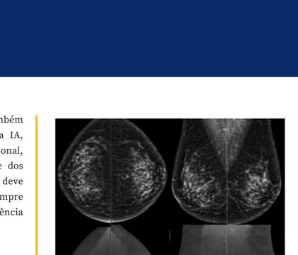
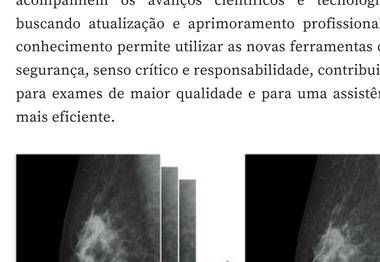
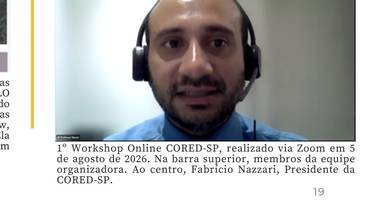

A palestra da professora Aparecida de Fátima também abordou desafios relacionados à implementação da IA, como capacitação contínua, responsabilidade profissional, ética, segurança das informações e uso consciente dos recursos tecnológicos.
Diante do cenário de constante evolução tecnológica, torna-se essencial que Técnicos e Tecnólogos acompanhem os avanços científicos, buscando atualização e aprimoramento profissional, com segurança, senso crítico e responsabilidade.


